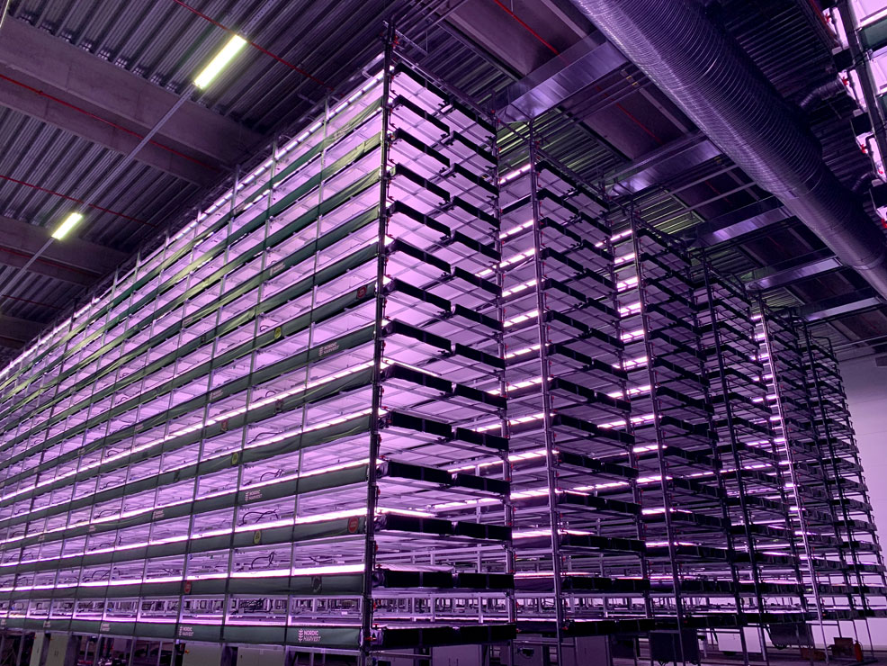
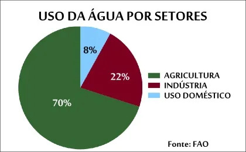
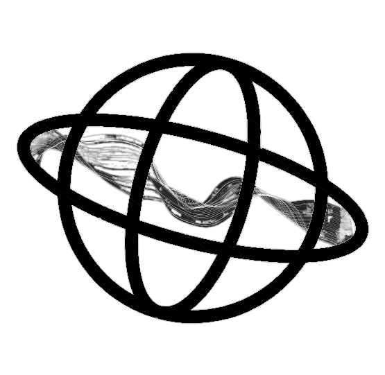

Grow Tech
Kits compactos com estruturas modulares, iluminação LED e sistemas de irrigação permitem o cultivo de alimentos frescos em ambientes urbanos, aumentando a segurança alimentar local.
Benefícios
Agricultura vertical oferece acesso a alimentos frescos, reduz a dependência de fontes externas maximiza o uso do espaço, aumenta a produção e melhora a segurança alimentar de comunidades.
A agricultura vertical é sustentável, pois requer 95% menos água em comparação com outros métodos agrícolas.

